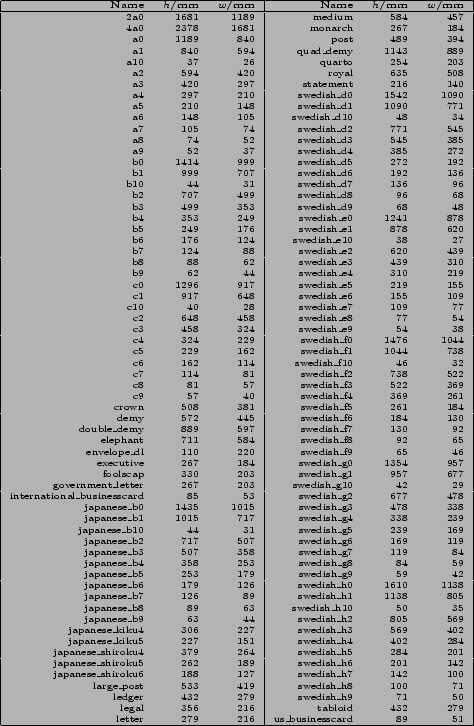

Next: 3.3 Plotting Up: 3.2 Formatting and Terminals Previous: 3.2 Formatting and Terminals Contents Index
By default, when the postscript terminal produces printable, i.e. not encapsulated, output, the papersize for this output is read from your system locale settings. It may be changed, however, with the set papersize command, which may be followed either by the name of a recognised papersize, or by the dimensions of a user-defined size, specified as a height,width pair, both being measured in millimetres. For example:
set papersize a4 set papersize 100,100
A list of recognised paper size names is given in Figure 3.1.
|  |